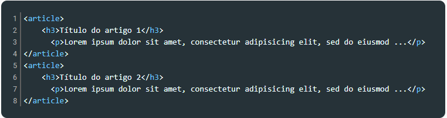
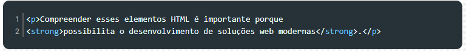
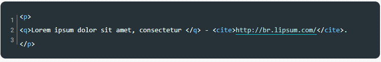

O header é utilizado para representar o cabeçalho de um documento ou seção declarado no HTML. Nele podemos inserir elementos de h1 a h6, até elementos para representar imagens, parágrafos ou mesmo listas de navegação.
Exemplo de uso de header:

O elemento section representa uma seção dentro de um documento e geralmente contém um título, o qual é definido por meio de um dos elementos entre h1 e h6. Podemos utilizar o section, por exemplo, para descrever as seções/tópicos de um documento.
Exemplo de uso de section:

Utilizamos o elemento article quando precisamos declarar um conteúdo que não precisa de outro para fazer sentido em um documento HTML, por exemplo, um artigo em um blog. É recomendado identificar cada article com um título.
Exemplo de uso de article:
O elemento nav é utilizado quando precisamos representar um agrupamento de links de navegação, que, por sua vez, são criados com os elementos ul, li e a.
Exemplo de uso de nav:

O elemento aside é utilizado quando precisamos criar um conteúdo de apoio/adicional ao conteúdo principal. Por exemplo, ao falar de HTML semântico, podemos indicar ao leitor outros conteúdos sobre a linguagem HTML como sugestão de leitura complementar.
Exemplo de uso de aside:

O elemento main especifica o conteúdo principal e, consequentemente, de maior relevância dentro da página. Para ser considerada bem construída, uma página deve apresentar apenas um conteúdo principal.
Exemplo de uso de main:

O elemento figure é uma marcação de uso específico para a inserção de uma figura. Para incluir a descrição dessa figura, podemos utilizar o elemento figcaption.
Exemplo de uso de figure:

O elemento footer representa um rodapé de um documento, como a área presente no final de uma página web. Normalmente é utilizado para descrever informações de autoria, como nome e contato do autor, e data de criação do conteúdo.
Exemplo de uso de footer:

A principal função do elemento A é descrever um link, conectando os diversos documentos de um site e permitindo a navegação por esse conteúdo. Normalmente esses documentos estão relacionados por compartilharem um assunto em comum.
Exemplo de uso de A:

O elemento EM é utilizado quando desejamos enfatizar um trecho ou palavra no texto, indicando que ela contribui de forma mais relevante para o sentido/compreensão do conteúdo.
Exemplo de uso de EM:

Dessa forma enfatizamos o trecho mais relevante da pergunta.
O elemento strong também é utilizado para destacar uma parte do texto. Sua principal diferença em relação ao elemento EM é que EM pode alterar o propósito de uma frase, como vimos anteriormente.
Exemplo de uso de strong:
O elemento cite é utilizado para declarar que naquele trecho há uma citação, isto é, um trecho de texto que não foi escrito pelo autor do conteúdo. Normalmente utiliza-se o cite em conjunto com o elemento Q, responsável por apresentar o conteúdo retirado de outra fonte.
Exemplo de uso de cite e Q:
O elemento time é utilizado para representar datas. Assim, caso seja necessário informar a data em que um conteúdo foi escrito, podemos declarar a tag time e acrescentar a ela o atributo datetime para escrever a data de forma padronizada.